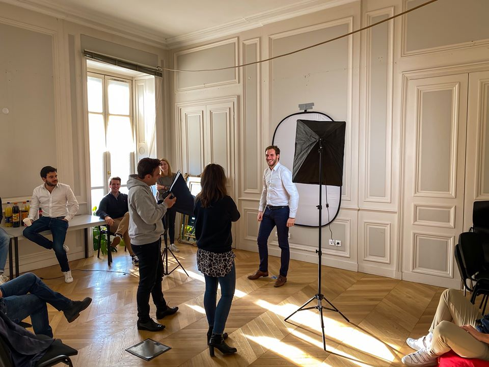
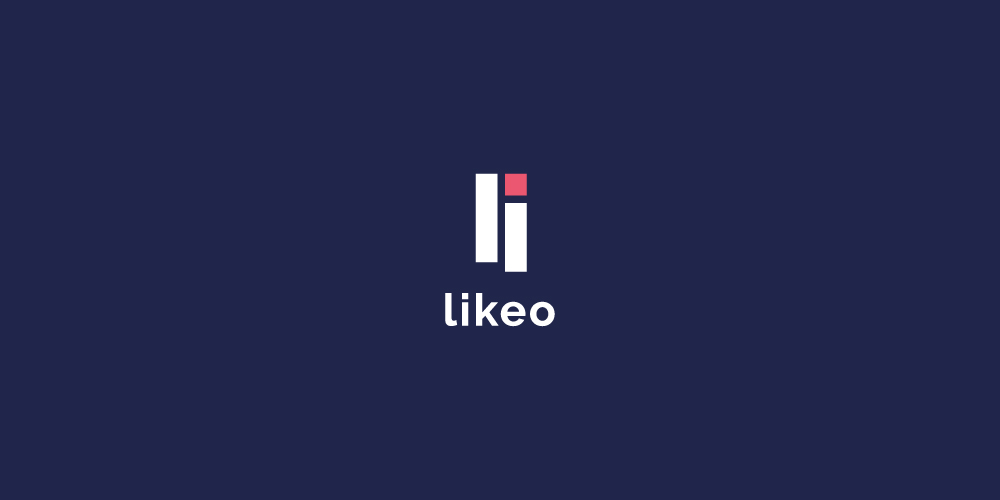
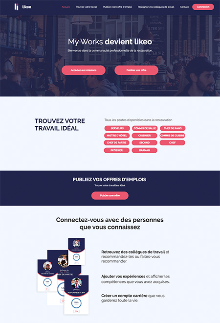
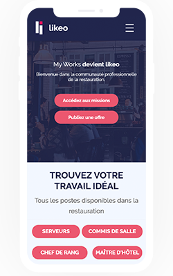

[!] Mon expérience au sein de l'entreprise
J'intègre My Works en mai 2019, en tant que social media manager.

Lucas Macaluso
[!] Mon expérience au sein de l'entreprise
My Works est une strat-up installée à Lyon depuis un an, et qui compte 12 personnes à son actif, elle propose de nombreuses missions dans des restaurants, bars, clubs et festivals de la ville. Le concept c’est quoi ? Tu choisis tes missions en fonction de tes dispo, tu es payé à ta juste valeur et tu bénéficies du soutien de la communauté My Works.
J’ai effectué différentes missions que ce soit online comme offline, sur les réseaux sociaux, sur le site internet ou encore du print. Ma mission principale était d’animer la communauté et de l’augmenter (plus de 650 Workers à Lyon) à travers des évènements. De plus, j’ai réalisé des campagnes e-mailing ainsi que des ads afin d’acquérir de nouveaux Workers. Très vite j’ai su faire mes preuves au sein de l’entreprise et obtenir la confiance des supérieurs.
[*] Mon expérience au sein de l'entreprise
Nous avons traversé une période compliquée pour tout le monde et surtout pour certains métiers dont les restaurateurs. C’était une période économiquement parlant difficile et nous avons mis en place un concept : Ensemble avec nos restaurateurs.
Le but était de mettre en place une initiative solidaire. Les restaurateurs avaient besoin de nous pendant cette période étrange pour continuer de nous régaler après la crise.
C’était de permettre aux restaurateurs de pouvoir pré-vendre des menus, plats ou boissons à leurs clients habituels. Les clients de ces établissements pouvaient après le confinement profiter de ce qu’ils avaient préacheté.
[*] Vers un gros changement !
Au vus d’une levée de fond, My Works décide de changer de nom et devient Likeo. Dès lors, j’ai été chargé de réaliser un rebranding de la charte graphique, un nouveau logo, un nouveau site internet ainsi qu’une nouvelle app. Ce changement marque une nouvelle étape dans notre projet et confirme notre volonté d’apporter davantage de solutions à nos utilisateurs.
J'ai été chargé de réaliser la nouvelle identité de Likeo. Pour la réalisation du logo, j'ai choisi d'intégrer les deux premières lettres de "likeo" afin de reproduire deux bâtons, se caractérisant par deux humains. Pour ce qui est des couleurs, je suis parti sur des dérivées du bleu & rose.

Réalisation du nouveau site vitrine de likeo, de plus, j'ai été amené à travailler le wording de la page pour que les travailleurs comprennent et à la fois les restaurateurs.
 À l'issue de la nouvelle charte graphique, les directeurs de likeo se sont rapprochés de moi afin de réaliser le nouveau design de l'application. Désormais je travaille avec les développeurs afin de leur faire gagner un temps considérable et permet d'avoir une vue d'ensemble sur la maquette avant la réalisation.
Site réalisé par Lucas Macaluso